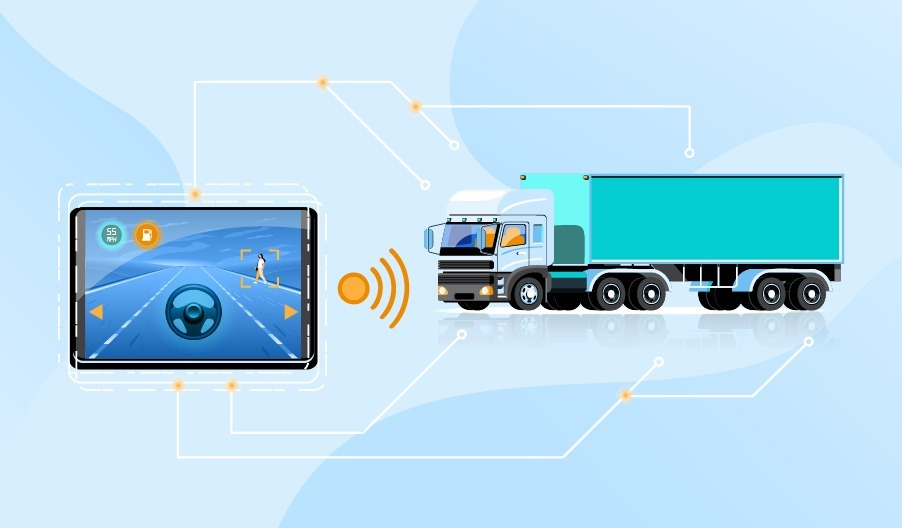

<main>
    <article>
        <div class="main-title">
            <h1>Tecnologías de Seguimiento de Carga para una Logística Eficiente</h1>
        </div>
        <figure>
            
        </figure>
        <section class="intro-text">
            <p>En un mundo donde la logística y el transporte son pilares fundamentales para el funcionamiento de la economía de un país, la integración de tecnologías avanzadas se muestra como un elemento diferenciador clave. Este artículo se adentra en las últimas innovaciones en tecnologías de seguimiento de carga, destacando la transformación significativa impulsada por sensores IoT y soluciones basadas en blockchain.</p>
        </section>

        <section>
            <h1>Sensores IoT: visibilidad en tiempo real</h1>
            <p>Los sensores IoT (Internet de las Cosas) están revolucionando la forma en que las empresas gestionan sus envíos. Estos dispositivos actúan como ojos y oídos digitales y se pueden encontrar integrados en contenedores, pallets, o en los mismos camiones. Los mismos ofrecen una visibilidad durante todo el proceso logístico.</p>
            <ul>
                <li>Ubicación en Tiempo Real: Los sensores proporcionan datos precisos sobre la ubicación exacta de la carga en cualquier momento, permitiendo un seguimiento en tiempo real.</li>
                <li>Condiciones de Carga: Este componente permite la monitorización en tiempo real de variables críticas como temperatura, humedad y otras condiciones específicas de carga, garantizando así la integridad de productos sensibles.</li>
            </ul>
        </section>

        <section>
            <h1>Soluciones Basadas en Blockchain: Transparencia y Eficiencia:</h1>
            <p>La tecnología blockchain se ha consolidado como una herramienta confiable para mejorar la transparencia, seguridad y eficiencia en la cadena de suministro. En el contexto del seguimiento de carga, ofrece beneficios significativos.</p>
            <ul>
                <li>Registro Inmutable de Eventos: Cada evento relacionado con la carga se registra en bloques vinculados, asegurando un registro inalterable y compartido de todas las transacciones y movimientos.</li>
                <li>Reducción de Trámites Documentales: La blockchain elimina la necesidad de documentos en papel, reduciendo los tiempos de procesamiento en aduanas y puntos de transferencia.</li>
            </ul>
        </section>

        <section>
            <h1>Implicaciones para la Cadena de Suministro</h1>
            <p>La combinación de sensores IoT y tecnología blockchain va más allá de la mejora de la visibilidad; tiene implicaciones profundas en la eficiencia y confianza en toda la cadena de suministro.</p>
            <ul>
                <li>Mejora de la Eficiencia Operativa: La capacidad de monitoreo en tiempo real y el registro seguro y preciso de eventos reducen los tiempos de respuesta y mejoran la eficiencia operativa.</li>
                <li>Aumento de la Confianza: La transparencia proporcionada por la cadena de bloques y la fiabilidad de los datos de los sensores IoT aumentan significativamente la confianza tanto para las empresas como para los clientes.</li>
            </ul>
            <p>En un panorama logístico en constante evolución, la adopción de tecnologías de seguimiento de carga emerge como un elemento esencial para mantener la eficiencia y la competitividad. La combinación de sensores IoT y blockchain no solo mejora la visibilidad y la confianza, sino que también allana el camino para una cadena de suministro más eficiente y resiliente en el futuro. La inversión en estas innovaciones no solo es una estrategia de vanguardia, sino un requisito para aquellos que buscan liderar en la nueva era de la logística.</p>
        </section>

    </article>
</main>
